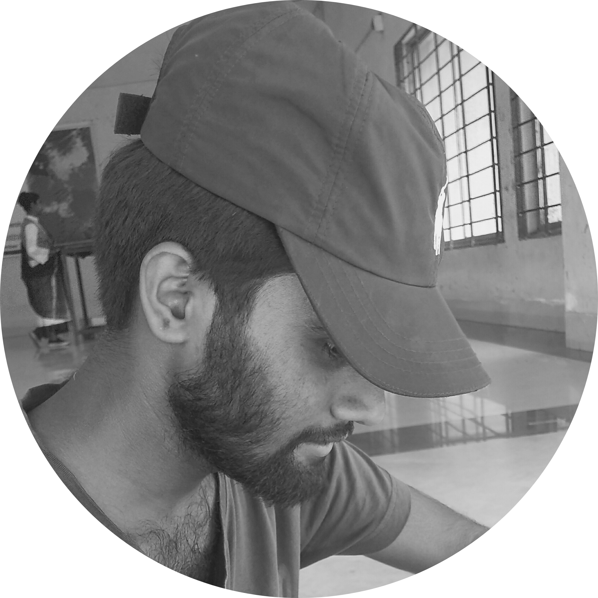

|  |
Md Emran Masud NayonStudents of Prime University Department of CSE Mirput-1, Dhaka I am a student of Prime University. Right now passing 5th semester with a concentration to be a ..... master. I have enough knowledge of raw coding for 1 years with c and java but i feel comfort in ..... I am a self learner and addicted to like ..., ... . |
Link to: Contact Information
| Date | Work | Group | GPA | Institute |
|---|---|---|---|---|
| 2012-2013 | S.S.C | Science | 5.00 | Sindurna Lokman Hossain High School |
| 2014-2015 | H.S.C | Science | 4.25 | Alimuddin Govt. College |
| 2019-2022 | B.Sc(running) | CSE | running | Prime University, Dhaka |